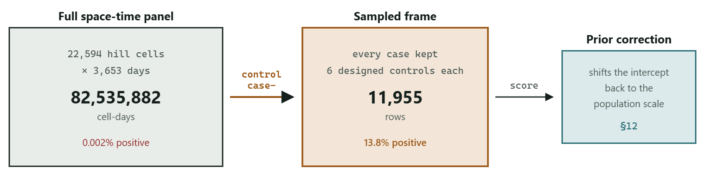
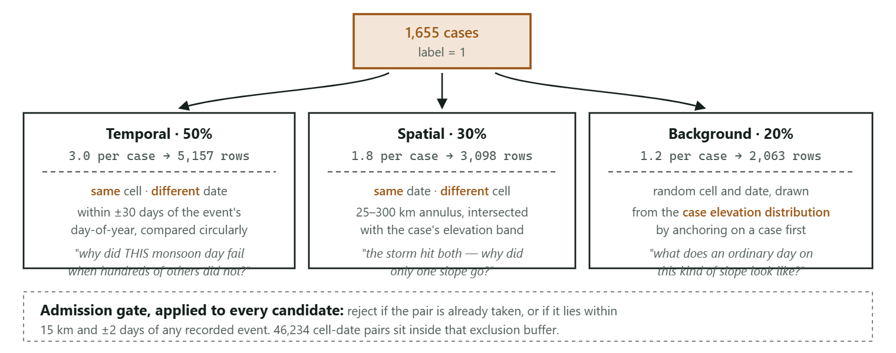
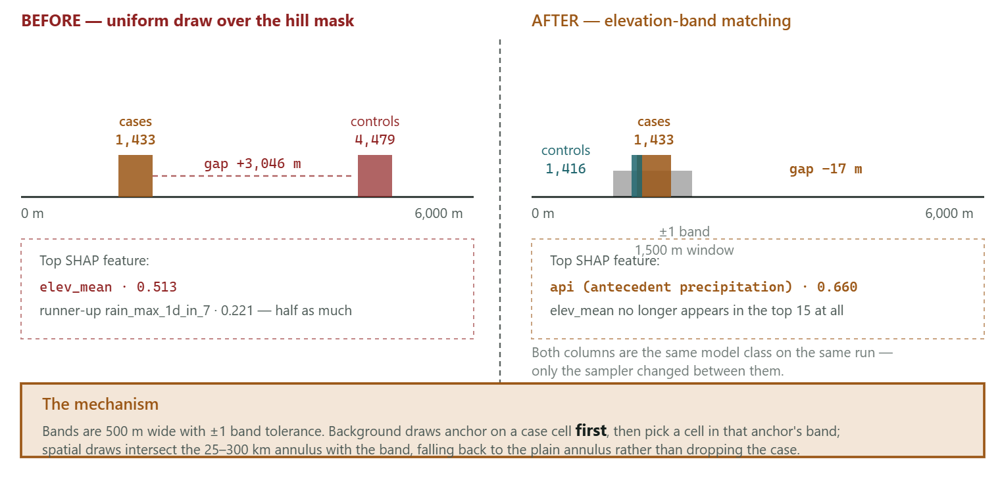
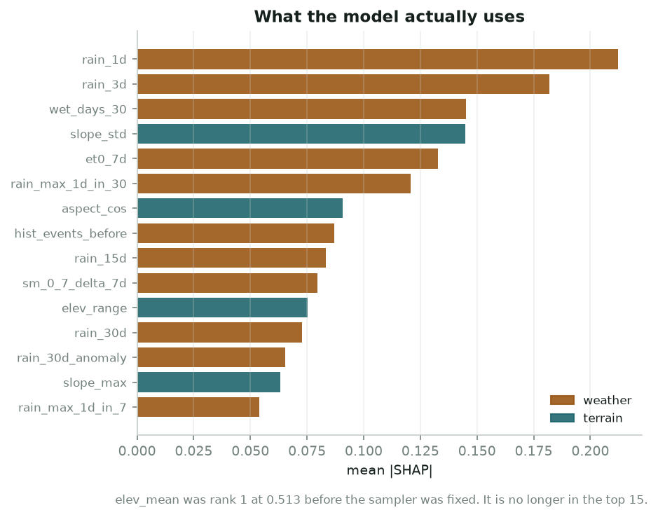
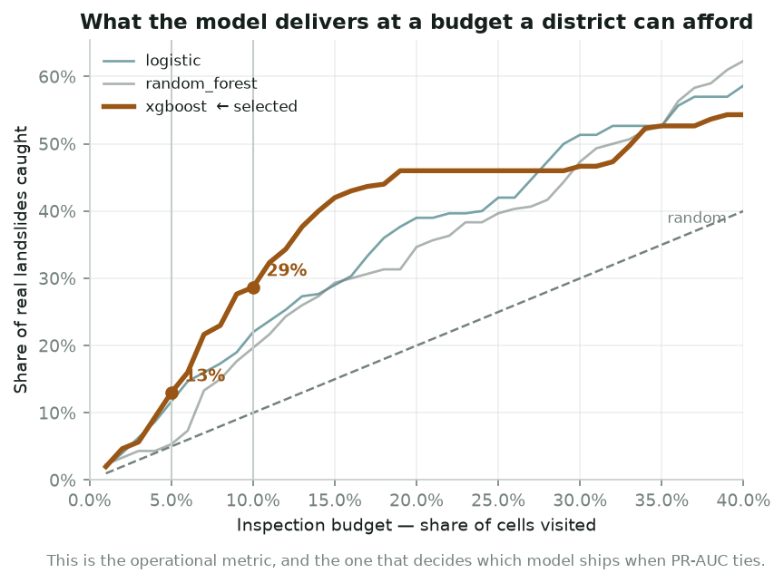
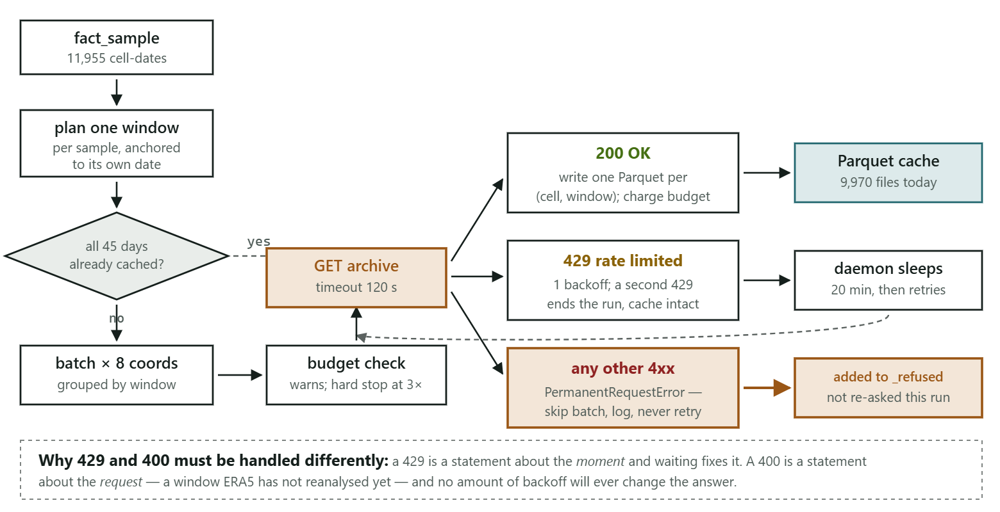
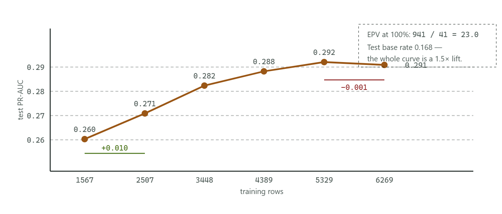
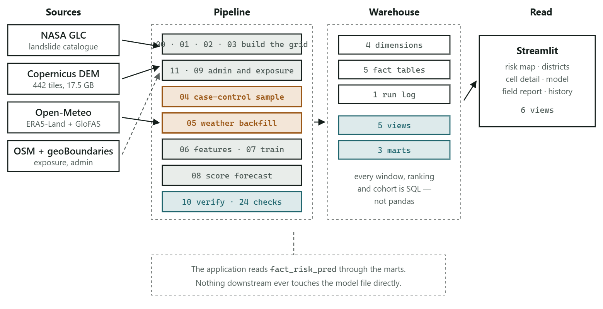
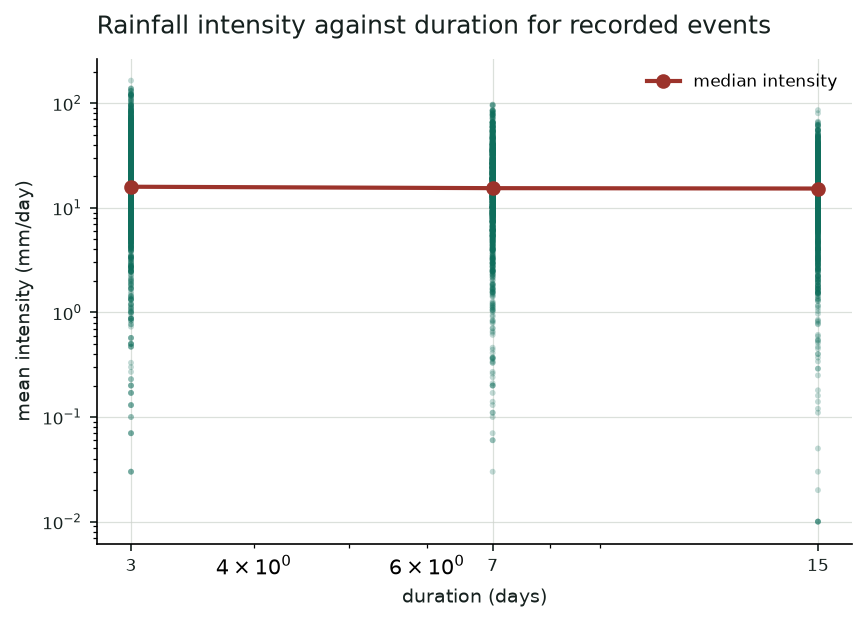

My landslide model was 99.998% accurate and completely useless. What six months of building a rare-event early-warning system taught me about the difference between a number that looks good and a number that means something — including the bug I found in my own sampler that would have shipped silently.
There is a moment in every machine learning project where you get a number back and feel good about it.
Mine came early. I was building a landslide early-warning system for the Indian Himalaya, and my first model reported 99.998% accuracy.
It predicted "no landslide" for every cell, on every day, forever.
Both of those statements are true at the same time, and the gap between them is the entire problem. This is the story of closing it — and of the four other times the project lied to me before I caught it.
Across the study area there is roughly one landslide per 48,000 cell-days.
That single figure dictates every design decision that follows, so it's worth sitting with. My study area is the Himalayan arc plus India's North Eastern Region, carved into a grid of 40,800 cells at 0.1° resolution — each about 11 km on a side. After filtering to cells with real slope, 22,594 remain. Multiply by 3,653 days of study window and you get roughly 82 million cell-days.
The catalogue records 1,719 landslides inside them.
Two consequences follow immediately, and both are traps.
Accuracy becomes actively misleading. Not merely uninformative — misleading. A model that always says "no" scores 99.998%, and that number conceals total failure behind a figure that looks like triumph. My metrics module never computes accuracy. Not because it's unfashionable, but because reporting it would be closer to lying than to measuring.
The obvious data structure becomes impossible. Materialising all 82 million cell-days would mean 82 million rows, each needing a 45-day weather history fetched from an API that allows 10,000 calls a day. The data acquisition alone would take centuries.
So the first real decision was: don't build that table at all.

There's a catch, and it's the kind that bites people who forget it: you have deliberately broken the base rate. Your sample is 13.8% positive; the world is 0.002% positive. Every probability the model produces is inflated by roughly four orders of magnitude.
That distortion is exactly recoverable — it's a known log-odds offset you subtract at scoring time. But only if you remember. I'll come back to what happens when you forget.
Here's where it gets interesting. Which controls?
The naive answer is "random cell-days". Draw one at random: it's probably flat, probably dry, probably in January. Train a model to separate those from monsoon landslides in the mountains, and it will do brilliantly — by learning "mountain in July versus plain in winter."
True. Completely useless. You've built a season-and-terrain detector.
So the negatives are drawn in three strata, each one deliberately removing a different confound by holding it constant.

Temporal controls (50%) use the same cell on a different date, matched to within 30 days of the event's day-of-year. This forces the question: why did this monsoon day fail when hundreds of other monsoon days in this exact cell did not? Terrain is held constant because it's literally the same hillside. Season is held constant by the matching. All that's left is weather.
Spatial controls (30%) use the same date in a different cell, 25–300 km away. The storm hit both — why did only one slope go? Now weather is roughly held constant and terrain varies.
Background controls (20%) are a random cell and date. What does an ordinary day on this kind of slope look like? This re-establishes the base rate.
One rule underpins all of it: a candidate negative within 15 km and ±2 days of a recorded event is discarded, never labelled zero.
The reason is a property of the label source that's easy to skate past. The NASA Global Landslide Catalog records landslides that were reported. In remote Himalayan terrain, many are not. A cell 8 km from a confirmed slide, on the same day, in the same storm, may well have failed too — nobody was there to write it down.
Labelling that cell "no landslide" is not a missing label. It is teaching the model something false.
46,234 cell-date pairs sit inside that buffer and are silently dropped. Note also that the spatial control annulus starts at 25 km — outside the 15 km exclusion radius. That's not a coincidence; it's so the two rules can never contradict each other.
Now the part I actually want to tell you about.
I trained the model. I pulled up the SHAP chart — the standard way of asking "what is this thing actually using?" — and elev_mean, the mean elevation of the cell, was the top feature.
At 2.3 times the weight of the runner-up.
Here's the thing: that is not obviously wrong. Elevation is a perfectly plausible landslide predictor. Higher terrain is steeper, colder, more fractured. If you showed that chart in a review, most people would nod.
What bothered me was the magnitude. Landslides are a rainfall phenomenon. The literature is unambiguous — antecedent rainfall saturates a slope over weeks, then one burst tips it. Rainfall should dominate. It didn't. It wasn't even close.
So I went looking, and found the bug one full pipeline stage away from where it surfaced.
My hill mask — the filter deciding which cells are "mountain" enough to model — is a single threshold: mean slope ≥ 5°. That is a defensible rule. A landslide needs a slope; keeping floodplain cells only dilutes the negative pool.
Ladakh. The Tibetan plateau. High, cold, arid, sitting outside the monsoon entirely — and comfortably above 5° of mean slope. They sail straight through the mask.
So when background controls were drawn uniformly from that mask, this happened:

Control cells had a median elevation of 4,479 m. Cases had 1,433 m. A gap of over three kilometres.
The model was not learning what makes a slope fail. It was learning to tell a Tibetan plateau from a Himalayan valley. That's a real distinction, and a completely different question from the one I was asking. It would have scored well. It would have generalised to nothing.
The instinct is to fix the mask. That's wrong — the mask is correct. Those plateau cells genuinely are steep. is_hill is doing its job.
The bug is in the sampler. So controls are now matched to the elevation band of the case they're drawn around: 500 m bands, ±1 band tolerance. Background draws anchor on a case cell first, then pick a cell from that anchor's band.
Result: the gap went from +3,046 m to −17 m. And elev_mean fell out of the top 15 features entirely.

That is the physics the landslide literature describes. And I want to be precise about what produced it: I did not change the model. Not one hyperparameter. I changed how the comparison group was drawn, and the model started answering a different question.
This is the part I'd push hardest on if I were reviewing someone else's version of this project. A fix you can't detect regressing isn't a fix.
So there's a regression test that builds a synthetic world: plateau cells at 4,500 m and slope cells at 1,400 m, interleaved in space. That interleaving is the whole point. If the plateau sat in its own corner, the 25–300 km spatial annulus would exclude it by accident, and the test would pass for the wrong reason.
Interleaved, distance tells you nothing. Only elevation-band matching can pass.
I could tell you PR-AUC improved after the fix. I won't, because it isn't a fair comparison — different sample, different rows, different test split, and the weather backfill was still growing underneath the whole thing. Only the SHAP ranking is a valid before/after. Claiming a metric improvement would be exactly the quiet dishonesty the rest of this system exists to prevent.
Some weeks later my weather coverage went from 20% to 74% — roughly three times the training data. I retrained, expecting the headline number to climb.
PR-AUC fell from 0.410 to 0.244.
That looks like a disaster. It is not. Look at what happened underneath:
| 20% coverage | 74% coverage | |
|---|---|---|
| PR-AUC | 0.410 | 0.244 |
| base rate | 0.267 | 0.168 |
| lift over base | 1.54× | 1.45× |
| Brier score | 0.184 | 0.139 |
| calibration error | 0.065 | 0.060 |
| recall @ 10% budget | 0.203 | 0.287 |
| spatial minus temporal | −0.030 | +0.015 |
The base rate fell with the score. PR-AUC has to be read against the base rate — it's the area under a curve whose floor is that rate. A PR-AUC of 0.244 against a 0.168 base rate is very nearly the same model as 0.410 against 0.267.
And everything not tied to the base rate improved. Brier score down. Calibration tighter. Recall at a realistic inspection budget up 40%. Best of all: the gap between spatial and temporal generalisation flipped positive, meaning the model now does slightly better on regions it has never seen than on future dates in regions it knows.
Why did the base rate move? My fetch order prioritised cases, so early on the covered sample was case-heavy. As coverage grew, composition normalised toward the designed ratio.
This is precisely why every PR-AUC in this project is printed with a bootstrap confidence interval beside it.
At 74% coverage I trained three models.
| model | PR-AUC | 95% CI | recall @5% | recall @10% |
|---|---|---|---|---|
| random forest | 0.2639 | 0.231 – 0.300 | 0.053 | 0.197 |
| logistic | 0.2604 | 0.229 – 0.302 | 0.117 | 0.220 |
| XGBoost | 0.2444 | 0.214 – 0.280 | 0.130 | 0.287 |
Sort by PR-AUC and random forest wins by 0.0035.
But look at those confidence intervals. They overlap almost completely. That 0.0035 is noise. Sorting on it is sorting on nothing.
Now look at the recall column. Random forest catches 5.3% of real landslides in the top 5% of cells. XGBoost catches 13.0% — two and a half times as many. Those do not overlap.

PR-AUC is a summary across every threshold. But a district doesn't operate at "every threshold" — it has a fixed number of inspection teams.
So the selection rule changed. Models whose PR-AUC interval overlaps the leader's are treated as tied, and the tie breaks on recall at budget.
The tie-break validates itself before it applies. If the validation split and the test split disagreed about which tied model has better recall, the rule falls back to the PR-AUC leader — because a tie-break that only holds on the split you measured it on isn't a tie-break, it's tuning. They agreed here.
That same jump in data caused a different failure, and this one nicely illustrates how a reasonable-looking guard can measure the wrong thing.
My code scaled tree capacity by the number of positives: under 500, keep the trees shallow; above it, let them grow. Sensible.
Going from 20% to 74% coverage took my training positives from 465 to 941. Crossed the threshold. Trees got deep.
random_forest train 0.934 validation 0.241
xgboost train 0.991 validation 0.214Training PR-AUC of 0.99. Validation of 0.21. That is not a model, it's a lookup table — it had memorised the training rows.
The gate was measuring the wrong quantity. 941 positives sounds comfortable, right up until you divide it by 41 features. That's 23 events per variable. For anything capable of memorising a row, 23 is thin.
The gate now measures events per variable, with the flexible branch closed below 50. Both tree models immediately got better on held-out data once their capacity was tightened.
What I like about this one: I diagnosed it entirely from the train-versus-validation gap. The test split was never consulted, so the fix cost me nothing in held-out honesty.
Not every problem was statistical. Some were just engineering, and the weather backfill was the long pole of the entire project.
Each of 11,955 samples needs its own 45-day weather window. Open-Meteo's free tier allows about 10,000 calls a day. Total need: roughly 38,000. That's a multi-day job that has to survive interruption.

HTTP 400 is not HTTP 429. My fetcher had one retry policy: back off, retry four times, then raise. Reasonable for rate limits. Then one day the daemon died on a 400 — and took down a run that still had 10,000 good windows left to fetch.
A 429 is a statement about the moment. Wait, and it resolves. A 400 is a statement about the request itself — in this case, asking the ERA5 reanalysis archive for a date it hasn't processed yet. No amount of backoff will ever change that answer. Retrying it four times just delays the same failure and then throws away the entire run.
Cache keys must not move. An earlier version merged overlapping date windows within a cell. It was 21% cheaper on API calls. It was also a disaster, because the cache was keyed on (cell, start_date, end_date) — and merged boundaries shift whenever the sampled dates for that cell change.
So when I fixed the elevation bug and rebuilt the sample, it invalidated nearly the whole backfill. 2,190 fetched windows. 232 survived. Days of API budget, gone, because I'd optimised the wrong thing.
Windows are now anchored to their own sample date and never move. And the cache check asks a better question: not "does this filename exist" but "are all the days I need present somewhere on disk". The days don't care which file they arrived in.
"The dataset is small" is an excuse until you measure it, at which point it becomes a finding.
So I subsampled the training split at fixed fractions, held the test split fixed, and plotted it.

The curve has stopped climbing. More data is no longer the constraint.
Here's my favourite detail in this whole project. This was the second time I measured that curve. The first, on a third of the data, extrapolated that another 4× would buy +0.02 to +0.04.
The actual 3× bought +0.031.
It means when I say "finishing the backfill won't move the score much," that isn't a hunch — it's a prediction the method has already demonstrated it can make.
Time to be concrete, because it would be easy to end on the interesting failures and skip the deliverable.
The system runs a twelve-stage pipeline from four public data sources into a MySQL star schema, and serves a six-view application on top.

1.45× better than guessing. That is a real but modest signal, and I'd rather state it plainly than dress it up.
Read the budget rows, not the AUC. Inspect the top 10% of cells and you reach roughly three in ten landslides. Whether that's useful depends entirely on what inspecting a cell costs — and that's a question for a district engineer, not for me.
A thing I got wrong initially and had to redesign: the model's raw score answers exactly one question, and operations need three.
"How often does this actually happen?" needs the prior correction — undoing the case-control distortion to recover a real-world frequency. Without it every number is inflated ~10,000×. A raw score of 0.23 becomes something like 1 in 6,100.
"How urgently should this be inspected?" needs risk bands, and here's a subtlety that cost me a rebuild: the bands are cut on relative risk, not the raw score. A model calibrated against a 15% base rate produces scores clustered near 0.15. A rule like "critical above 0.80" would never fire — the whole map would read "low" straight through a monsoon.
"Where do I send the one team I have?" needs exposure. A moderate-risk cell above a district road and two villages outranks a severe one in empty forest. Exposure is deliberately not a model input — it's joined downstream, because hazard and consequence are different things and conflating them hides both.
Every limitation below is in the repository's model card too. If a project only lists what it achieves, it's marketing.
Daily rainfall totals cannot see the trigger. This is the largest cap on performance, and it's a data limit, not a model limit. Landslides respond to sub-daily rainfall intensity — millimetres per hour. My model sees a 24-hour sum. A three-hour cloudburst and a full day of drizzle can be identical in my data and completely different on a hillside.
But be precise about which axis is missing. I ran the classic intensity-duration diagnostic against my data, and it passes — median intensity falls from 16 mm/day at 3 days to 15 at 15 days, the decreasing power law the literature reports. Antecedent rainfall separates cleanly too: 108 mm before an event against 66 mm for controls.

11 km cells against 1–2 km rainfall. The grid matches ERA5-Land's native resolution — no false precision — but Himalayan rainfall varies sharply over a kilometre or two. The predictor often does not see the rain that caused the slide.
Reporting bias is unfixable. The exclusion buffer mitigates it. Nothing removes it.
This is not an operational warning system. No hourly nowcast, no validation against official bulletins, no human in the loop. It ranks cells for inspection. Presenting it as anything more would be irresponsible.
If you take four things from this:
1. Your metric can be technically correct and substantively false. 99.998% accuracy. PR-AUC "dropping" while the model improves. Both are real numbers that point the wrong way. Always ask what the number is measured against.
2. The bug is often one stage upstream of where it hurts. My SHAP chart looked wrong. The cause was a slope threshold two stages earlier that nobody would look at twice. When a result is weird, don't just investigate the model — walk back through how the data got there.
3. Write the test that makes your fix permanent. A fix you can't detect regressing isn't a fix. And construct the test so it can't pass for the wrong reason.
4. Measure your excuses. "Not enough data" became a learning curve that told me exactly what more data was worth — and that I should stop asking for it and go after predictor resolution instead.
The elevation confounder is the one I keep thinking about. It would have shipped. It produced a plausible chart, respectable metrics, and a model that had learned to recognise Tibet.
The only reason I caught it is that the magnitude felt wrong and I went looking. That's not a process. That's luck plus suspicion.
Slopewatch is built for SIH 2026, Problem Statement 26192, on public data: the NASA Global Landslide Catalog, Open-Meteo's ERA5-Land archive, Copernicus DEM, and OpenStreetMap. The full technical walkthrough — twenty sections, eighteen diagrams, and every number traced to a committed artefact — lives in the repository README.
Every figure in this post is generated by a script that verifies it reproduces the metric it illustrates before drawing it. A figure that can't reproduce its own number is worse than no figure.